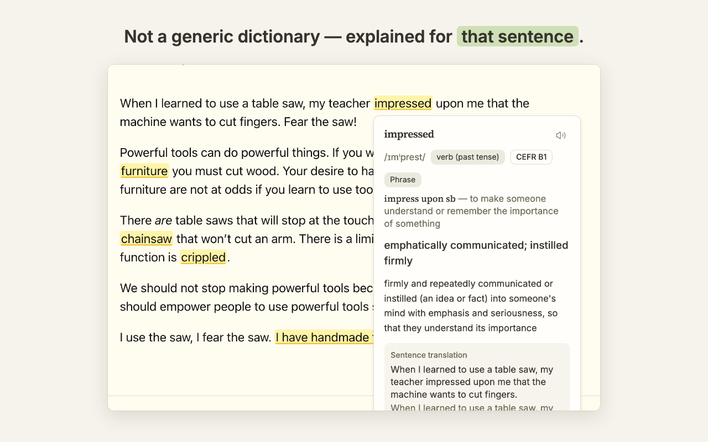
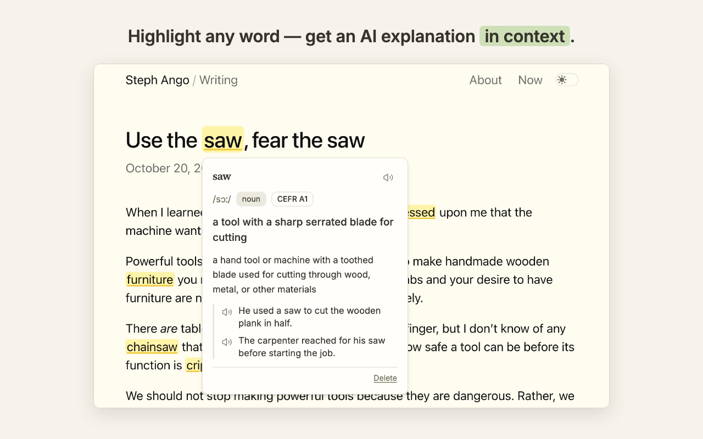
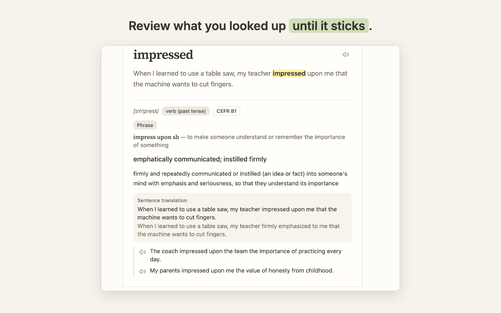
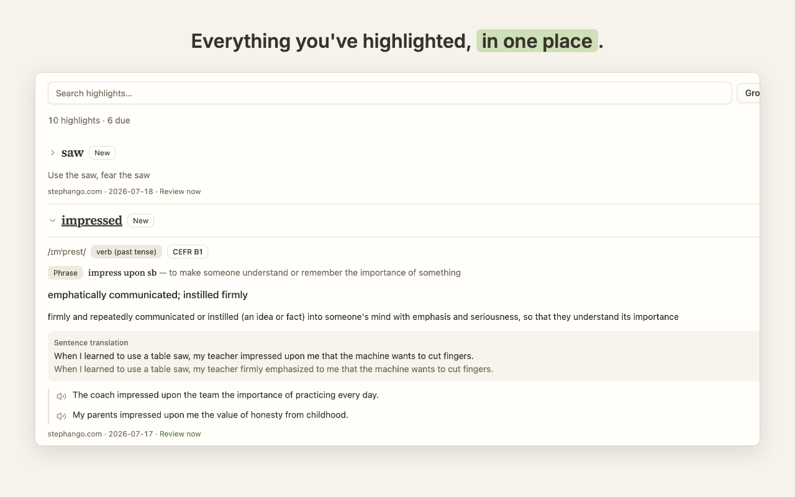
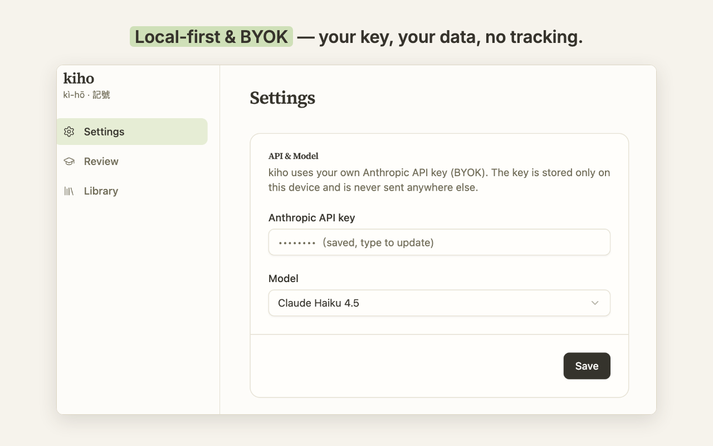

Chrome extension · Local-first · BYOK
Highlight English in context — explain it, then remember it.
Reading English and constantly breaking your flow to look words up? kiho keeps you in the page.
Free extension — uses your own Anthropic (Claude) API key.

How it works
Look up in context.
Select a word, phrase, or whole sentence and get an explanation tuned to how it's used in that sentence — meaning, a concise translation, the full translation of the surrounding sentence, and examples. When the word is part of a phrasal verb or idiom, kiho surfaces the whole expression too.

Built-in review.
Every highlight enters an FSRS spaced-repetition queue (keyboard-first: Space to reveal, 1/2/3 to rate) so the words you look up actually stick.

Your highlights persist.
Marks reappear in the right place when you revisit a page — including dynamic pages and single-page apps — and hovering shows the saved explanation instantly, with no new API call. If a page changed too much, kiho prefers not to show a mark rather than place it wrong.

Local-first and private.
Everything stays on your device. The only thing that leaves your browser is the text you choose to look up, sent to Anthropic with your own API key. No accounts, no usage-data collection, no tracking.

Hear it.
Words and example sentences have one-tap pronunciation via your browser's local speech — no key, no network.
Guided start.
A first-run tour lets you try the full look-up card on a demo paragraph before entering any key.
Five languages.
kiho's interface is available in 繁體中文, English, 日本語, 한국어, and Español — explanations come in the language you choose.
Bring your own key
kiho uses your personal Anthropic (Claude) API key — enter it once in settings; it never leaves your device except to call Anthropic.
The fastest way to learn English isn't another flashcard app — it's reading what native speakers actually write, and learning each word in context. kiho turns the articles and blogs you already read into your study material.
Get kiho on the Chrome Web Store